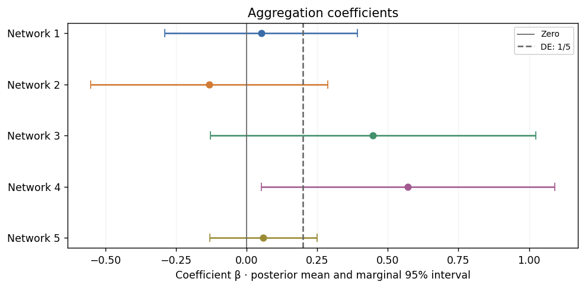
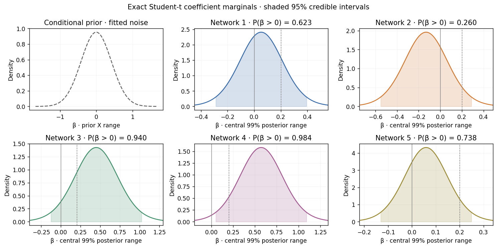
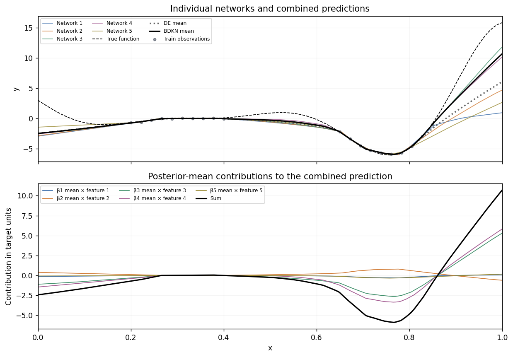
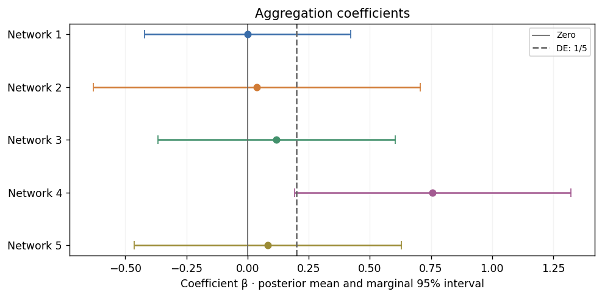
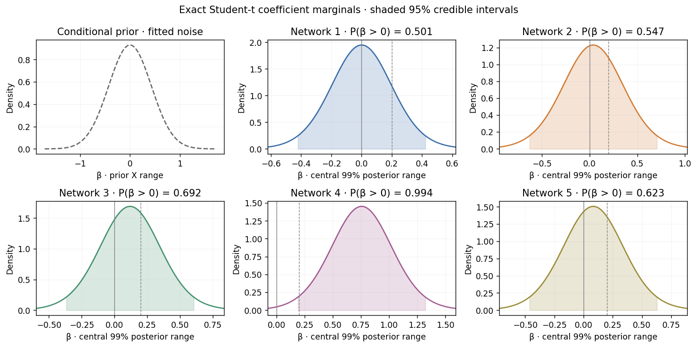
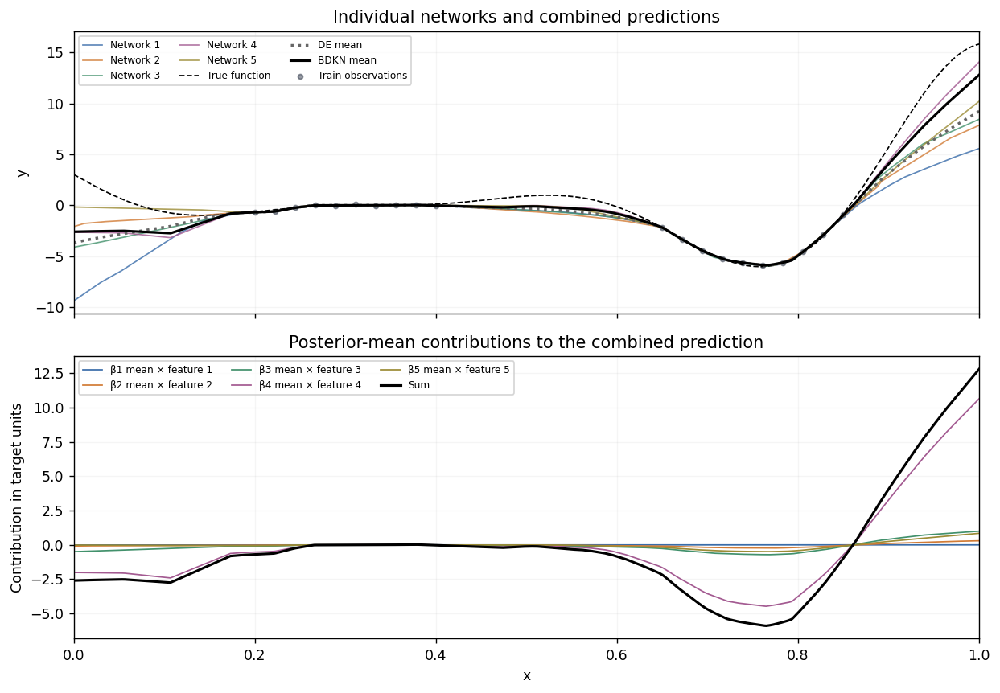
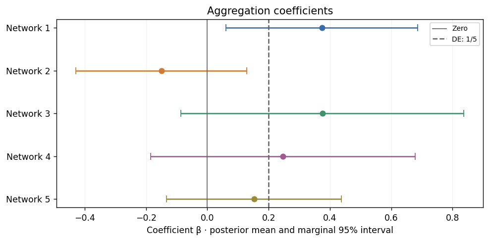
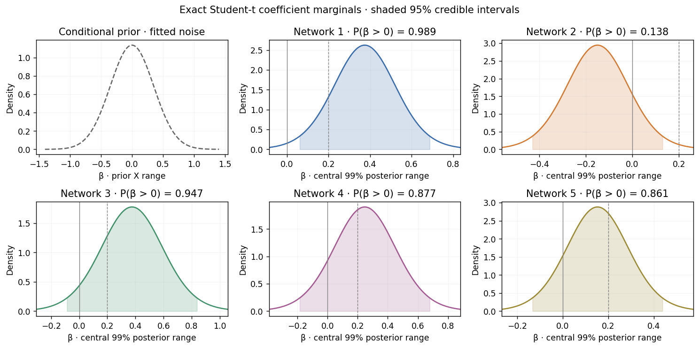
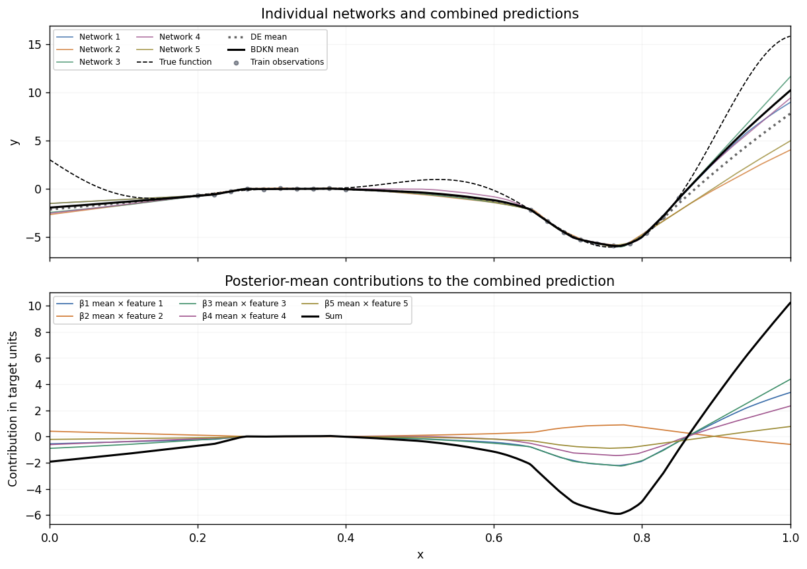

Regression comparison
Download resultsAggregation weights
Coefficients can be negative and need not sum to one. Intervals describe coefficient uncertainty; the dashed reference is DE’s fixed 1/H weight.
BDKN


Each density panel uses its own X range for readability; coefficient intervals above share a common axis. Prior reference conditions on fitted noise. Contribution shares use held-out inputs; test targets are used only for scoring.
| Network | β mean | 95% low | 95% high | P(β > 0) | Contribution share | Test RMSE | Test NLL |
|---|---|---|---|---|---|---|---|
| 1 | 0.04436 | -0.25239 | 0.34112 | 0.62081 | 0.02077 | 2.77758 | 1690.98373 |
| 2 | -0.44101 | -0.90097 | 0.01895 | 0.02963 | 0.20503 | 4.14137 | 2585.39364 |
| 3 | -0.04979 | -0.52027 | 0.42070 | 0.41376 | 0.02849 | 2.11616 | 3948.29119 |
| 4 | 0.96865 | 0.63295 | 1.30434 | 1.00000 | 0.53969 | 1.93914 | 2182.53233 |
| 5 | 0.47701 | -0.05980 | 1.01383 | 0.96070 | 0.20602 | 3.77514 | 19156.44097 |
Functional repulsion · BDKN



Each density panel uses its own X range for readability; coefficient intervals above share a common axis. Prior reference conditions on fitted noise. Contribution shares use held-out inputs; test targets are used only for scoring.
| Network | β mean | 95% low | 95% high | P(β > 0) | Contribution share | Test RMSE | Test NLL |
|---|---|---|---|---|---|---|---|
| 1 | 0.05201 | -0.28880 | 0.39281 | 0.62323 | 0.03145 | 3.96167 | 1614.78426 |
| 2 | -0.13165 | -0.55107 | 0.28778 | 0.26005 | 0.08990 | 3.29651 | 1208.93153 |
| 3 | 0.44792 | -0.12736 | 1.02319 | 0.94000 | 0.38695 | 1.79806 | 3206.46870 |
| 4 | 0.57158 | 0.05149 | 1.09166 | 0.98357 | 0.45602 | 1.99073 | 528.64510 |
| 5 | 0.05907 | -0.13084 | 0.24898 | 0.73809 | 0.03568 | 3.77633 | 8613.20280 |
Weight repulsion · BDKN



Each density panel uses its own X range for readability; coefficient intervals above share a common axis. Prior reference conditions on fitted noise. Contribution shares use held-out inputs; test targets are used only for scoring.
| Network | β mean | 95% low | 95% high | P(β > 0) | Contribution share | Test RMSE | Test NLL |
|---|---|---|---|---|---|---|---|
| 1 | 0.00067 | -0.42131 | 0.42264 | 0.50130 | 0.00064 | 3.60333 | 19024.42087 |
| 2 | 0.03852 | -0.62952 | 0.70655 | 0.54727 | 0.03228 | 2.32381 | 2252.14575 |
| 3 | 0.11858 | -0.36719 | 0.60435 | 0.69191 | 0.11284 | 2.34396 | 1064.65310 |
| 4 | 0.75704 | 0.19132 | 1.32276 | 0.99437 | 0.78893 | 1.48679 | 5045.16426 |
| 5 | 0.08291 | -0.46250 | 0.62832 | 0.62277 | 0.06531 | 1.79812 | 54844.76124 |
First-order repulsion · BDKN



Each density panel uses its own X range for readability; coefficient intervals above share a common axis. Prior reference conditions on fitted noise. Contribution shares use held-out inputs; test targets are used only for scoring.
| Network | β mean | 95% low | 95% high | P(β > 0) | Contribution share | Test RMSE | Test NLL |
|---|---|---|---|---|---|---|---|
| 1 | 0.37431 | 0.06142 | 0.68721 | 0.98928 | 0.28797 | 2.07735 | 16487.74889 |
| 2 | -0.14960 | -0.42855 | 0.12935 | 0.13826 | 0.09977 | 3.45360 | 14739.69108 |
| 3 | 0.37530 | -0.08673 | 0.83732 | 0.94715 | 0.32346 | 1.83628 | 2726.13307 |
| 4 | 0.24696 | -0.18456 | 0.67848 | 0.87674 | 0.19094 | 2.12978 | 3132.36004 |
| 5 | 0.15240 | -0.13267 | 0.43748 | 0.86100 | 0.09786 | 3.20016 | 12555.43496 |